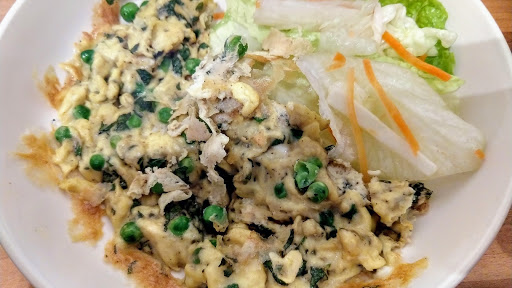

Pea and mint omelette
Serve this deliciously light omelette with crusty bread and a green salad for a fresh and tasty lunch. When they are in season, use freshly shelled peas instead of frozen ones.
Ingredients
- 50 g frozen peas
- 4 eggs
- 2 tbsp chopped fresh mint
- a knob of butter
- salt and ground black pepper
Instructions
- Break the eggs into a large bowl and beat with a fork. Season well with salt and pepper and set aside
- Cook the peas in a large pan of salted boiling water for 3-4 minutes until tender. Drain well in a colander and add to the eggs in the bowl. Stir in the chopped fresh mint and swirl with a spoon until thoroughly mixed.
- Heat the butter in a medium frying pan until foamy. Pour in the egg mixture and cook over a medium heat for 3-4 minutes, drawing in the cooked egg from the edges from time to time, until the mixture is nearly set.
- Finish off cooking the omelette under a hot grill until set and golden. Carefully fold the omelette, cut in half and serve immediately.